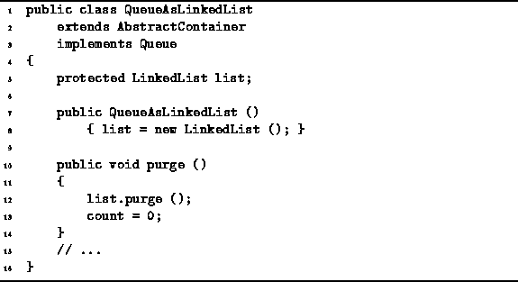

Data Structures and Algorithms
with Object-Oriented Design Patterns in Java
Data Structures and Algorithms
with Object-Oriented Design Patterns in Java
Program  defines the QueueAsLinkedList
constructor and purge methods.
In the case of the linked list implementation,
it is not necessary to preallocate storage.
The constructor simply initializes the list object as an empty list.
The running time of the constructor is O(1).
defines the QueueAsLinkedList
constructor and purge methods.
In the case of the linked list implementation,
it is not necessary to preallocate storage.
The constructor simply initializes the list object as an empty list.
The running time of the constructor is O(1).

Program: QueueAsLinkedList class constructor and purge methods.
The purge method empties the queue by invoking the purge method provided by the LinkedList class and then sets the count field to zero. Since a linked-list can be purged in constant time, the total running time for the purge method is O(1).
 Copyright © 1998 by Bruno R. Preiss, P.Eng. All rights reserved.
Copyright © 1998 by Bruno R. Preiss, P.Eng. All rights reserved.